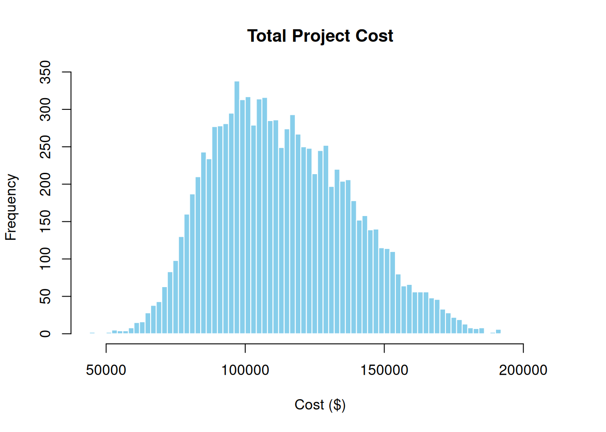
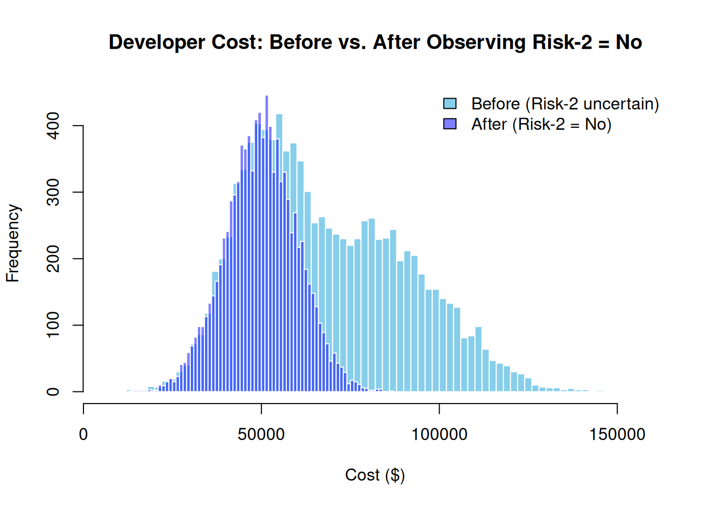
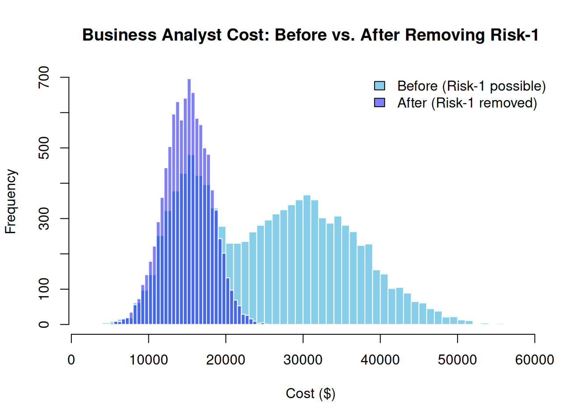

library(PRA)
set.seed(42)9 It’s a Small World After All: Probabilistic Networks
“Everything is connected to everything else.” — Barry Commoner’s First Law of Ecology
A risk register lists risks. A probability network shows you how those risks talk to each other, and to your project. It’s the difference between knowing that “Technical Complexity” is a risk and understanding exactly how it flows through your developer costs into your total project budget, and what happens to that flow when you learn new information.
Bayesian networks are the tool. A Bayesian network is a specific type of probabilistic network, a directed acyclic graph (DAG) in which each node represents a random variable and each edge encodes a conditional probability relationship. The “probabilistic network” framing in this chapter’s title is intentional: the core concepts (conditioning, propagation, graph structure) apply to the broader class, and PRA uses the Bayesian network formulation specifically. They combine graph theory with probability theory to model the full dependency structure of a project: which risks drive which resources, which resources drive which tasks, and how uncertainty propagates all the way up to the project total.
9.1 What Is a Bayesian Network?
NoteBayesian Network vs. DSM
The Design Structure Matrix (Chapter 8) shows structural coupling, specifically how many resources two tasks share. A Bayesian network goes further: it encodes probabilistic dependencies, meaning the actual conditional distributions of costs given risk states. Where the DSM counts connections, the network simulates consequences.
Use a DSM for rapid structural triage. Use a Bayesian network when you need actual cost distributions and the ability to condition on observed evidence.
A Bayesian network is a directed acyclic graph (DAG) where:
- Nodes represent random variables (risks, resources, tasks, project totals)
- Edges represent conditional dependencies (Risk A affects Resource C)
- Distributions encode the uncertainty at each node
Bayesian networks are well-suited to project risk analysis because they explicitly model how risk events propagate through resources and tasks to affect total project cost (Govan 2014).
For a more advanced example covering causal inference, graph surgery, and the see-versus-do distinction across a full project portfolio, see Chapter 10.
9.2 Project Setup
9.2.1 Tasks
Consider a small software development project with three tasks.
tasks <- data.frame(
ID = c("F", "G", "H"),
Label = c("Task-1", "Task-2", "Task-3"),
Task = c("Requirements and Design", "Development", "Testing and Handover")
)
knitr::kable(tasks, caption = "Project Tasks")| ID | Label | Task |
|---|---|---|
| F | Task-1 | Requirements and Design |
| G | Task-2 | Development |
| H | Task-3 | Testing and Handover |
9.2.2 Resources
Each task draws on one primary resource. The table below shows the baseline cost estimate for each resource.
resources <- data.frame(
ID = c("C", "D", "E"),
Label = c("Resource-1", "Resource-2", "Resource-3"),
Resource = c("Business Analyst", "Developer", "QA Engineer"),
Task_ID = c("F", "G", "H"),
Mean = c(15000, 50000, 20000),
SD = c(3000, 10000, 4000)
)
knitr::kable(resources, caption = "Project Resources")| ID | Label | Resource | Task_ID | Mean | SD |
|---|---|---|---|---|---|
| C | Resource-1 | Business Analyst | F | 15000 | 3000 |
| D | Resource-2 | Developer | G | 50000 | 10000 |
| E | Resource-3 | QA Engineer | H | 20000 | 4000 |
9.2.3 Risks
Two risk events can escalate resource costs if they occur.
risks <- data.frame(
Risk_ID = c("A", "B"),
Risk = c("Requirements Scope Creep", "Technical Complexity"),
Probability = c(0.70, 0.60),
Resource = c("Business Analyst", "Developer"),
Mean_if_occurs = c(30000, 80000),
SD_if_occurs = c(8000, 20000)
)
knitr::kable(risks, caption = "Project Risks")| Risk_ID | Risk | Probability | Resource | Mean_if_occurs | SD_if_occurs |
|---|---|---|---|---|---|
| A | Requirements Scope Creep | 0.7 | Business Analyst | 30000 | 8000 |
| B | Technical Complexity | 0.6 | Developer | 80000 | 20000 |
If Risk-1 (Requirements Scope Creep) occurs, the Business Analyst cost rises from $15,000 to $30,000. If Risk-2 (Technical Complexity) occurs, the Developer cost rises from $50,000 to $80,000. The QA Engineer is unaffected by either risk.
9.3 Building the Bayesian Network
9.3.1 Nodes
nodes <- data.frame(
id = c("A", "B", "C", "D", "E", "F", "G", "H", "I"),
label = c(
"Risk-1", "Risk-2",
"Resource-1", "Resource-2", "Resource-3",
"Task-1", "Task-2", "Task-3",
"Project"
),
group = c(
"Risk", "Risk",
"Resource", "Resource", "Resource",
"Task", "Task", "Task",
"Project"
),
stringsAsFactors = FALSE
)9.3.2 Edges
Edges encode the causal dependencies: risks affect resources, resources drive tasks, and tasks roll up to the project total.
links <- data.frame(
source = c("A", "B", "C", "D", "E", "F", "G", "H"),
target = c("C", "D", "F", "G", "H", "I", "I", "I"),
value = rep(1, 8),
stringsAsFactors = FALSE
)9.3.3 Distributions
distributions <- list(
A = list(type = "discrete", values = c(1, 0), probs = c(0.70, 0.30)),
B = list(type = "discrete", values = c(1, 0), probs = c(0.60, 0.40)),
C = list(
type = "conditional", condition = "A",
true_dist = list(type = "normal", mean = 30000, sd = 8000),
false_dist = list(type = "normal", mean = 15000, sd = 3000)
),
D = list(
type = "conditional", condition = "B",
true_dist = list(type = "normal", mean = 80000, sd = 20000),
false_dist = list(type = "normal", mean = 50000, sd = 10000)
),
E = list(type = "normal", mean = 20000, sd = 4000),
F = list(type = "aggregate", nodes = c("C")),
G = list(type = "aggregate", nodes = c("D")),
H = list(type = "aggregate", nodes = c("E")),
I = list(type = "aggregate", nodes = c("F", "G", "H"))
)9.3.4 Build the Graph
graph <- prob_net(nodes, links, distributions = distributions)The network can be visualized with the igraph and networkD3 packages.
library(igraph)
library(networkD3)
g <- graph_from_data_frame(graph$links, vertices = graph$nodes, directed = TRUE)
d3g <- igraph_to_networkD3(g, group = graph$nodes$group)forceNetwork(
Links = d3g$links, Nodes = d3g$nodes, NodeID = "name", Group = "group",
Value = "value", zoom = TRUE, legend = TRUE, arrows = TRUE,
opacity = 0.8, fontSize = 14
)Probabilistic network of risks, resources, tasks, and project cost.
plot(
g,
vertex.color = as.factor(graph$nodes$group),
vertex.size = 14, vertex.label.cex = 0.7,
edge.arrow.size = 0.4, layout = layout_with_sugiyama(g)$layout
)9.4 Inference: Forward Simulation
Use prob_net_sim() to forward-simulate the network and estimate the total project cost distribution.
sim_results <- prob_net_sim(graph, num_samples = 10000)hist(sim_results$I, breaks = 60,
main = "Total Project Cost",
xlab = "Cost ($)", col = "skyblue", border = "white")
The spread reflects compounded uncertainty from both risk events. The right tail represents the worst case: both risks occur.
9.5 Learning: Incorporating New Evidence
Use prob_net_learn() to clamp one or more nodes to observed values and re-simulate. This shows the downstream effect of new information, for example, learning that Technical Complexity (Risk-2) did not materialize.
learn_results <- prob_net_learn(
graph,
observations = list(B = "No"),
num_samples = 10000
)hist_before <- hist(sim_results$D, breaks = 60, plot = FALSE)
hist_after <- hist(learn_results$D, breaks = 60, plot = FALSE)
plot(
hist_before,
main = "Developer Cost: Before vs. After Observing Risk-2 = No",
xlab = "Cost ($)", col = "skyblue", border = "white",
ylim = c(0, max(hist_before$counts, hist_after$counts))
)
plot(hist_after, col = rgb(0, 0, 1, 0.5), border = "white", add = TRUE)
legend(
"topright",
legend = c("Before (Risk-2 uncertain)", "After (Risk-2 = No)"),
fill = c("skyblue", rgb(0, 0, 1, 0.5)), bty = "n"
)
With Risk-2 ruled out, the Developer cost collapses to the lower baseline distribution, and the total project cost shifts left accordingly.
9.6 Updating: Modifying the Network
Use prob_net_update() to modify the network structure or distributions. Suppose a design review eliminates Requirements Scope Creep as a concern: remove the arc from Risk-1 to Resource-1 and replace the conditional distribution with a fixed normal.
updated_graph <- prob_net_update(
graph,
remove_links = data.frame(source = "A", target = "C", stringsAsFactors = FALSE),
update_distributions = list(
C = list(type = "normal", mean = 15000, sd = 3000)
)
)
updated_results <- prob_net_sim(updated_graph, num_samples = 10000)hist_before <- hist(sim_results$C, breaks = 60, plot = FALSE)
hist_after <- hist(updated_results$C, breaks = 60, plot = FALSE)
plot(
hist_before,
main = "Business Analyst Cost: Before vs. After Removing Risk-1",
xlab = "Cost ($)", col = "skyblue", border = "white",
ylim = c(0, max(hist_before$counts, hist_after$counts))
)
plot(hist_after, col = rgb(0, 0, 1, 0.5), border = "white", add = TRUE)
legend(
"topright",
legend = c("Before (Risk-1 possible)", "After (Risk-1 removed)"),
fill = c("skyblue", rgb(0, 0, 1, 0.5)), bty = "n"
)
9.7 The Four Core Functions
| Function | What it does |
|---|---|
prob_net() |
Constructs the network from nodes, edges, and distributions |
prob_net_sim() |
Forward-simulates to estimate cost distributions |
prob_net_learn() |
Clamps observed nodes and re-simulates to propagate evidence |
prob_net_update() |
Modifies network structure and distributions as the project evolves |
9.8 Summary
9.9 Exercises
Learning effect. In the example, we observed Risk-2 = No. What do you expect happens to the total project cost distribution (node I) when Risk-2 is observed as “Yes” instead? Test your prediction by running
prob_net_learn()withlist(B = "Yes")and plotting the result.Modify a risk. Change the probability of Risk-1 from 0.70 to 0.30. How does this affect the mean total project cost from
prob_net_sim()? Is the change proportional to the probability change?Add a QA risk. Modify the network so that a new Risk-3 (with probability 0.40) affects the QA Engineer (Resource-3), increasing their cost from a mean of $20K to $35K if it occurs. Update the distributions and re-simulate. How much does this add to the expected project cost? ★
Seeing vs. doing. Explain the difference between
prob_net_learn(observations = list(B = "No"))andprob_net_update(remove_links = ...). When would you use each? Which corresponds to “seeing” and which to “doing” in the causal inference sense? (See Chapter 10 for the full treatment.)Project structure. ★ This example has a simple layered structure (Risk → Resource → Task → Project). Design a more complex network with two risks that both affect the same resource. What does that mean for the correlation between the two downstream tasks? Build the network and verify with a correlation matrix of
sim_results.